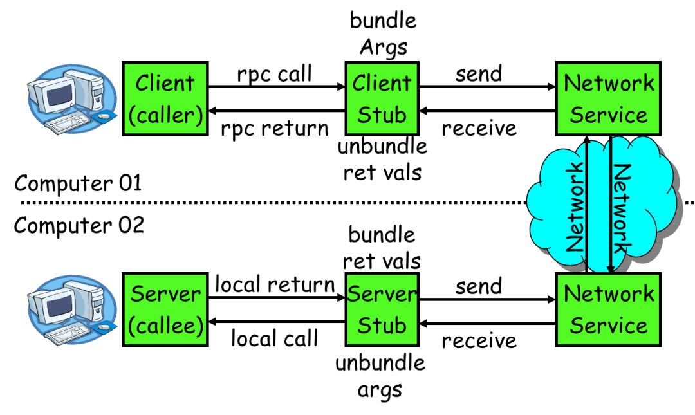

点击上方“Java架构沉思录”，选择“置顶公众号”。
有内涵、有价值的文章第一时间送达！
原文地址：https://my.oschina.net/hosee/blog/711632在学校期间大家都写过不少程序，比如写个hello world服务类，然后本地调用下，如下所示。这些程序的特点是服务消费方和服务提供方是本地调用关系。
publicclassTest{ publicstaticvoidmain(String[] args){ HelloWorldService helloWorldService = new HelloWorldServiceImpl(); helloWorldService.sayHello("test"); } }
而一旦踏入公司尤其是大型互联网公司就会发现，公司的系统都由成千上万大大小小的服务组成，各服务部署在不同的机器上，由不同的团队负责。
这时就会遇到两个问题：
要搭建一个新服务，免不了需要依赖他人的服务，而现在他人的服务都在远端，怎么调用？
其它团队要使用我们的新服务，我们的服务该怎么发布以便他人调用？下文将对这两个问题展开探讨。
1. 如何调用他人的远程服务？
由于各服务部署在不同机器，服务间的调用免不了网络通信过程，服务消费方每调用一个服务都要写一坨网络通信相关的代码，不仅复杂而且极易出错。
如果有一种方式能让我们像调用本地服务一样调用远程服务，而让调用者对网络通信这些细节透明，那么将大大提高生产力，比如服务消费方在执行helloWorldService.sayHello("test")时，实质上调用的是远端的服务。这种方式其实就是RPC（Remote Procedure Call Protocol），在各大互联网公司中被广泛使用，如阿里巴巴的hsf、dubbo（开源）、Facebook的thrift（开源）、Google grpc（开源）、Twitter的finagle（开源）等。
要让网络通信细节对使用者透明，我们需要对通信细节进行封装，我们先看下一个RPC调用的流程涉及到哪些通信细节：

服务消费方（client）调用以本地调用方式调用服务；
client stub接收到调用后负责将方法、参数等组装成能够进行网络传输的消息体；
client stub找到服务地址，并将消息发送到服务端；
server stub收到消息后进行解码；
server stub根据解码结果调用本地的服务；
本地服务执行并将结果返回给server stub；
server stub将返回结果打包成消息并发送至消费方；
client stub接收到消息，并进行解码；
服务消费方得到最终结果。
RPC的目标就是要2~8这些步骤都封装起来，让用户对这些细节透明。
1.1 怎么做到透明化远程服务调用？
怎么封装通信细节才能让用户像以本地调用方式调用远程服务呢？对java来说就是使用代理！java代理有两种方式：
jdk 动态代理
字节码生成
（关于动态代理，可以看下沉思君之前写过的文章：聊聊Java动态代理（上）和聊聊Java动态代理（下））
尽管字节码生成方式实现的代理更为强大和高效，但代码维护不易，大部分公司实现RPC框架时还是选择动态代理方式。
下面简单介绍下动态代理怎么实现我们的需求。我们需要实现RPCProxyClient代理类，代理类的invoke方法中封装了与远端服务通信的细节，消费方首先从RPCProxyClient获得服务提供方的接口，当执行helloWorldService.sayHello("test")方法时就会调用invoke方法。
publicclassRPCProxyClientimplementsjava.lang.reflect.InvocationHandler{ privateObject obj; publicRPCProxyClient(Object obj){ this.obj=obj; } /** * 得到被代理对象; */ publicstaticObjectgetProxy(Object obj){ return java.lang.reflect.Proxy.newProxyInstance(obj.getClass().getClassLoader(), obj.getClass().getInterfaces(), new RPCProxyClient(obj)); } /** * 调用此方法执行 */ publicObjectinvoke(Object proxy, Method method, Object[] args) throws Throwable { //结果参数; Object result = newObject(); // ...执行通信相关逻辑 // ... return result; } }
publicclassTest{ publicstaticvoidmain(String[] args){ HelloWorldService helloWorldService = (HelloWorldService)RPCProxyClient.getProxy(HelloWorldService.class); helloWorldService.sayHello("test"); } }
1.2 怎么对消息进行编码和解码？
1.2.1 确定消息数据结构
上节讲了invoke里需要封装通信细节（通信细节再后面几章详细探讨），而通信的第一步就是要确定客户端和服务端相互通信的消息结构。客户端的请求消息结构一般需要包括以下内容：
1）接口名称
在我们的例子里接口名是“HelloWorldService”，如果不传，服务端就不知道调用哪个接口了；
2）方法名
一个接口内可能有很多方法，如果不传方法名服务端也就不知道调用哪个方法；
3）参数类型&参数值
参数类型有很多，比如有bool、int、long、double、string、map、list，甚至如struct（class）；以及相应的参数值；
4）超时时间
5）requestID，标识唯一请求id，在下面一节会详细描述requestID的用处。
同理服务端返回的消息结构一般包括以下内容。
返回值
状态code
requestID
1.2.2 序列化
一旦确定了消息的数据结构后，下一步就是要考虑序列化与反序列化了。
什么是序列化？序列化就是将数据结构或对象转换成二进制串的过程，也就是编码的过程。
什么是反序列化？将在序列化过程中所生成的二进制串转换成数据结构或者对象的过程。
为什么需要序列化？转换为二进制串后才好进行网络传输嘛！
为什么需要反序列化？将二进制转换为对象才好进行后续处理！
现如今序列化的方案越来越多，每种序列化方案都有优点和缺点，它们在设计之初有自己独特的应用场景，那到底选择哪种呢？从RPC的角度上看，主要看三点：
通用性，比如是否能支持Map等复杂的数据结构；
性能，包括时间复杂度和空间复杂度，由于RPC框架将会被公司几乎所有服务使用，如果序列化上能节约一点时间，对整个公司的收益都将非常可观，同理如果序列化上能节约一点内存，网络带宽也能省下不少；
可扩展性，对互联网公司而言，业务变化飞快，如果序列化协议具有良好的可扩展性，支持自动增加新的业务字段，而不影响老的服务，这将大大提供系统的灵活度。
目前互联网公司广泛使用Protobuf、Thrift、Avro等成熟的序列化解决方案来搭建RPC框架，这些都是久经考验的解决方案。
1.3 通信
消息数据结构被序列化为二进制串后，下一步就要进行网络通信了。目前有两种常用IO通信模型：1）BIO；2）NIO。一般RPC框架需要支持这两种IO模型。
如何实现RPC的IO通信框架呢？
使用java nio方式自研，这种方式较为复杂，而且很有可能出现隐藏bug，但也见过一些互联网公司使用这种方式；
基于mina，mina在早几年比较火热，不过这些年版本更新缓慢；
基于netty，现在很多RPC框架都直接基于netty这一IO通信框架，省力又省心，比如阿里巴巴的HSF、dubbo，Twitter的finagle等。
1.4 消息里为什么要有requestID？
如果使用netty的话，一般会用channel.writeAndFlush()方法来发送消息二进制串，这个方法调用后对于整个远程调用(从发出请求到接收到结果)来说是一个异步的，即对于当前线程来说，将请求发送出来后，线程就可以往后执行了，至于服务端的结果，是服务端处理完成后，再以消息的形式发送给客户端的。于是这里出现以下两个问题：
怎么让当前线程“暂停”，等结果回来后，再向后执行？
如果有多个线程同时进行远程方法调用，这时建立在client server之间的socket连接上会有很多双方发送的消息传递，前后顺序也可能是随机的，server处理完结果后，将结果消息发送给client，client收到很多消息，怎么知道哪个消息结果是原先哪个线程调用的？
举个例子，线程A和线程B同时向client socket发送请求requestA和requestB，socket先后将requestB和requestA发送至server，而server可能将responseA先返回，尽管requestA请求到达时间更晚。我们需要一种机制保证responseA丢给ThreadA，responseB丢给ThreadB。
怎么解决呢？
client线程每次通过socket调用一次远程接口前，生成一个唯一的ID，即requestID（requestID必需保证在一个Socket连接里面是唯一的），一般常常使用AtomicLong从0开始累计数字生成唯一ID；
将处理结果的回调对象callback，存放到全局ConcurrentHashMap里面put(requestID, callback)；
当线程调用channel.writeAndFlush()发送消息后，紧接着执行callback的get()方法试图获取远程返回的结果。在get()内部，则使用synchronized获取回调对象callback的锁，再先检测是否已经获取到结果，如果没有，然后调用callback的wait()方法，释放callback上的锁，让当前线程处于等待状态。
服务端接收到请求并处理后，将response结果（此结果中包含了前面的requestID）发送给客户端，客户端socket连接上专门监听消息的线程收到消息，分析结果，取到requestID，再从前面的ConcurrentHashMap里面get(requestID)，从而找到callback对象，再用synchronized获取callback上的锁，将方法调用结果设置到callback对象里，再调用callback.notifyAll()唤醒前面处于等待状态的线程。
public Object get(){ synchronized (this) { // 旋锁 while (!isDone) { // 是否有结果了 wait(); //没结果是释放锁，让当前线程处于等待状态 } } }
privatevoidsetDone(Response res){ this.res = res; isDone = true; synchronized (this) { //获取锁，因为前面wait()已经释放了callback的锁了 notifyAll(); // 唤醒处于等待的线程 } }
2 如何发布自己的服务？
如何让别人使用我们的服务呢？有同学说很简单嘛，告诉使用者服务的IP以及端口就可以了啊。确实是这样，这里问题的关键在于是自动告知还是人肉告知。
人肉告知的方式：如果你发现你的服务一台机器不够，要再添加一台，这个时候就要告诉调用者我现在有两个ip了，你们要轮询调用来实现负载均衡；调用者咬咬牙改了，结果某天一台机器挂了，调用者发现服务有一半不可用，他又只能手动修改代码来删除挂掉那台机器的ip。现实生产环境当然不会使用人肉方式。
有没有一种方法能实现自动告知，即机器的增添、剔除对调用方透明，调用者不再需要写死服务提供方地址？当然可以，现如今zookeeper被广泛用于实现服务自动注册与发现功能！
简单来讲，zookeeper可以充当一个服务注册表（Service Registry），让多个服务提供者形成一个集群，让服务消费者通过服务注册表获取具体的服务访问地址（ip+端口）去访问具体的服务提供者。如下图所示：

具体来说，zookeeper就是个分布式文件系统，每当一个服务提供者部署后都要将自己的服务注册到zookeeper的某一路径上: /{service}/{version}/{ip:port}, 比如我们的HelloWorldService部署到两台机器，那么zookeeper上就会创建两条目录：分别为/HelloWorldService/1.0.0/100.19.20.01:16888， /HelloWorldService/1.0.0/100.19.20.02:16888。
zookeeper提供了“心跳检测”功能，它会定时向各个服务提供者发送一个请求（实际上建立的是一个 Socket 长连接），如果长期没有响应，服务中心就认为该服务提供者已经“挂了”，并将其剔除，比如100.19.20.02这台机器如果宕机了，那么zookeeper上的路径就会只剩/HelloWorldService/1.0.0/100.19.20.01:16888。
服务消费者会去监听相应路径（/HelloWorldService/1.0.0），一旦路径上的数据有任务变化（增加或减少），zookeeper都会通知服务消费方服务提供者地址列表已经发生改变，从而进行更新。
更为重要的是zookeeper与生俱来的容错容灾能力（比如leader选举），可以确保服务注册表的高可用性。
Java架构沉思录
一码不扫，何扫天下